Ernährung ist der Einstieg
Warme Mahlzeiten geben Kindern Kraft und Familien Sicherheit. Das bleibt notwendig.
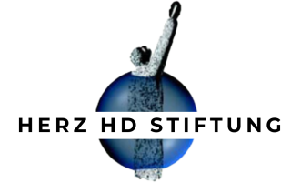
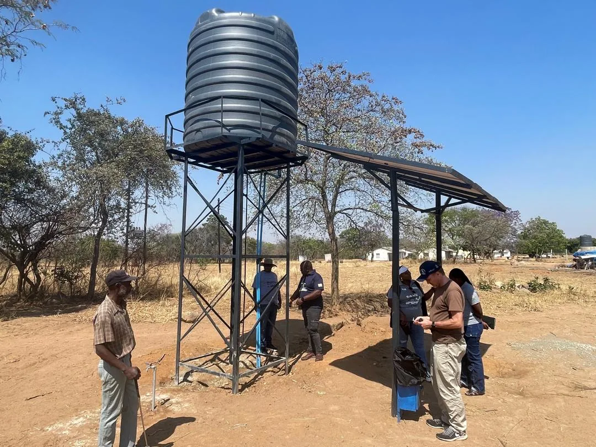
Projekte in Simbabwe
Wir arbeiten mit Gemeinden, nicht für sie. Ernährung stabilisiert den Alltag, Wasser schafft die Grundlage und Eigeninitiative macht Entwicklung tragfähig.
Unser Kern
Die Stiftung hilft dort, wo der Alltag konkret blockiert ist. Gleichzeitig soll Hilfe nicht zur Dauerschleife werden. Deshalb denken wir jede Maßnahme vom ersten Tag an in Richtung Verantwortung vor Ort.
Warme Mahlzeiten geben Kindern Kraft und Familien Sicherheit. Das bleibt notwendig.
Ohne Wasser keine Hygiene, keine Küche, kein Garten und kein realistischer Schritt zur Autarkie.
Gärten, Hühnerprojekte und neue Einnahmewege wachsen nur, wenn Gemeinden sie tragen.
Wasser & Hygiene
In Schulen ohne verlässlichen Wasserzugang kostet jeder Tag Zeit, Kraft und Würde. Wasser muss getragen werden, Küchen bleiben improvisiert, Hygiene bleibt schwierig. Ein solarbetriebener Brunnen verändert diese Grundlage sofort.
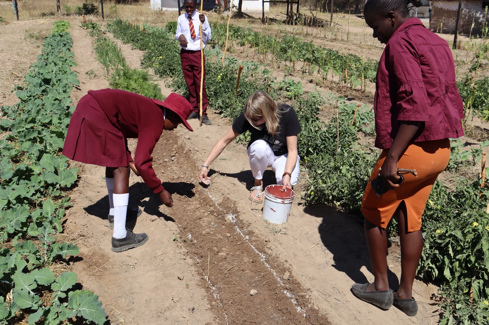
Beete, Gemüse, Küche und Schulalltag hängen zusammen. Genau deshalb steht Wasser auf dieser Seite im Mittelpunkt.
Vor Ort gesehen
Die Videos zeigen die gleiche Geschichte aus zwei Blickwinkeln: Vorher musste Wasser mühsam organisiert werden. Nachher wird Wasser zur Infrastruktur, auf der Schule und Gemeinde weiterbauen können.
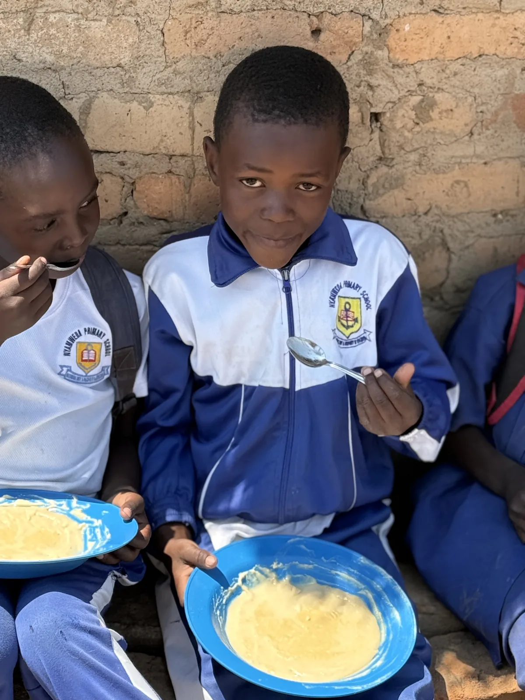
Schulspeisung & Bildung
Die tägliche Mahlzeit bleibt für viele Vorschulkinder der erste und wichtigste Stabilitätsanker. Sie ist direkte Hilfe, gut erklärbar und sofort wirksam. Gleichzeitig wissen wir: Wenn jedes Jahr nur dieselbe Not gelindert wird, verändert sich die Grundsituation zu wenig.
Deshalb bleibt Schulspeisung der Einstieg, während Wasser und Gartenprojekte die nächsten Schritte ermöglichen.
Gesundheit & Rehabilitation
Über Partner vor Ort unterstützen wir Kinder mit Behinderungen und Familien, die im Alltag häufig allein gelassen werden. Therapie, Betreuung und Lebensmittelpakete sind keine Randthemen, sondern Teil derselben Haltung: Würde statt Mitleid.
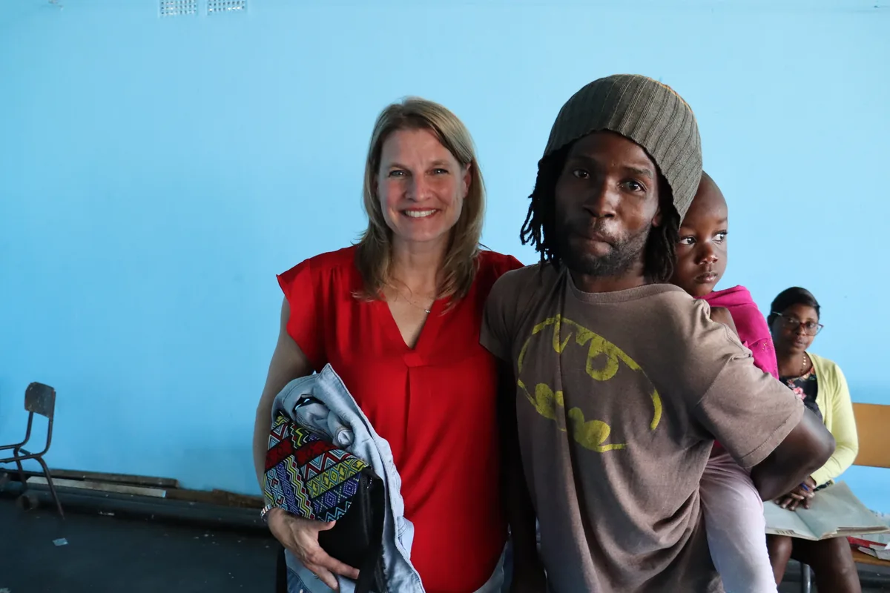
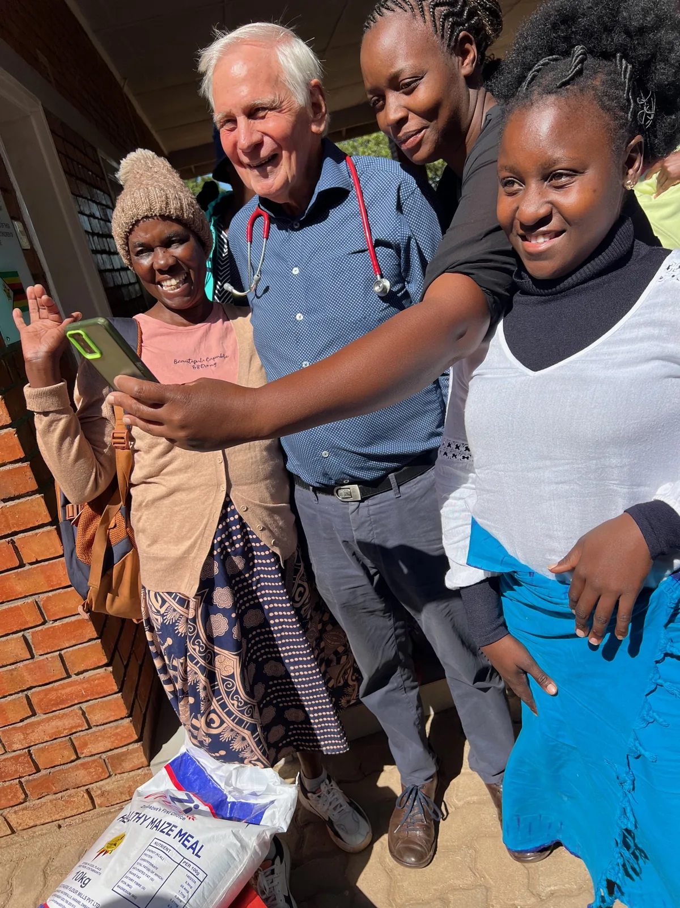
Entwicklungsarbeit ehrlich erzählen
Hühnerprojekte, Schulgärten und mögliche Microfinance-Ansätze sind wichtig, aber sie tragen mehr Risiko als klassische Nothilfe. Genau deshalb formulieren wir sie nicht als fertiges Versprechen. Wir zeigen, was bereits wächst, was gelernt wurde und wo noch Vertrauen, Struktur und Zeit nötig sind.
Das Ziel bleibt klar: Gemeinden sollen so gestärkt werden, dass sie Schulgeld, Ernährung und Infrastruktur Schritt für Schritt selbst mittragen können.
Projektübersicht
Die Auswahl orientiert sich am vorhandenen Webflow-Stand und den Gesprächsnotizen. Einzelne Zahlen und Detailstände sollten vor Veröffentlichung final vom Kunden geprüft werden.
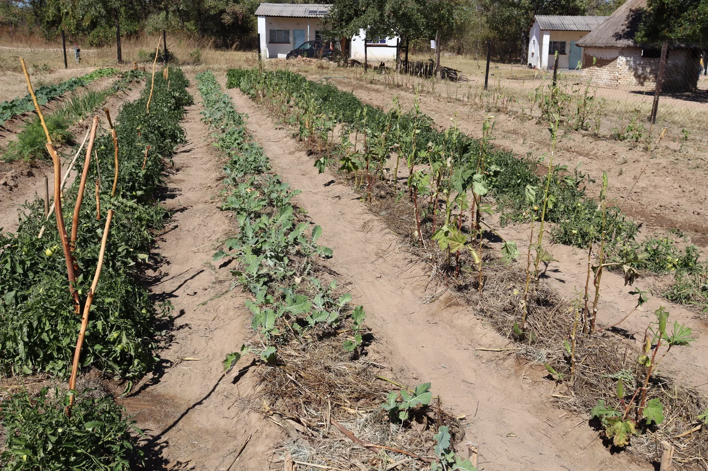
Der Brunnen ermöglicht Gemüseanbau und kleinere Hühner- und Gartenprojekte. Chishoshe zeigt, wie aus Wasser eine realistische Perspektive auf eigene Schulspeisung entstehen kann.
Die Schule nutzt die neue Wasserversorgung als Ausgangspunkt für Gemüsegarten, Hühnerprojekt und Ideen rund um ein Küchengebäude. Eltern und Schulleitung arbeiten eng zusammen.
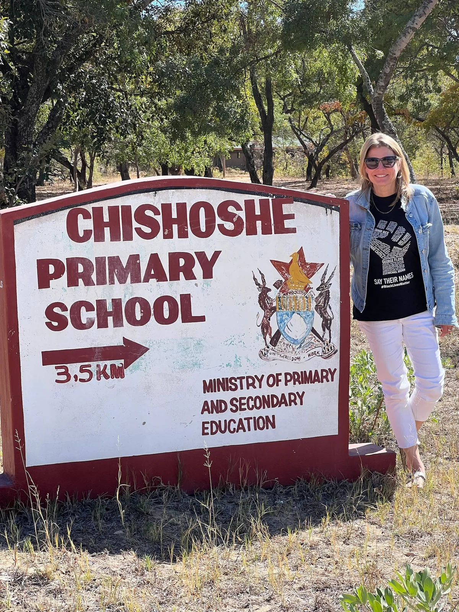
Der Brunnen liegt nahe am künftigen Gartenfeld. Wasser wird bereits für Kochen und Hygiene genutzt; selbst gelegte Rohre bringen es näher an die Schulküche.
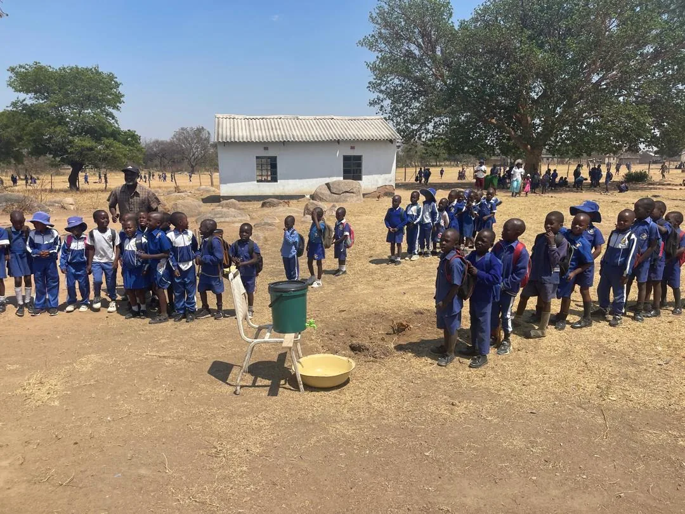
Im ECD-Programm geht es um frühkindliche Entwicklung, proteinreichen Brei und Gesundheitschecks, damit Unterernährung früh aufgefangen wird.
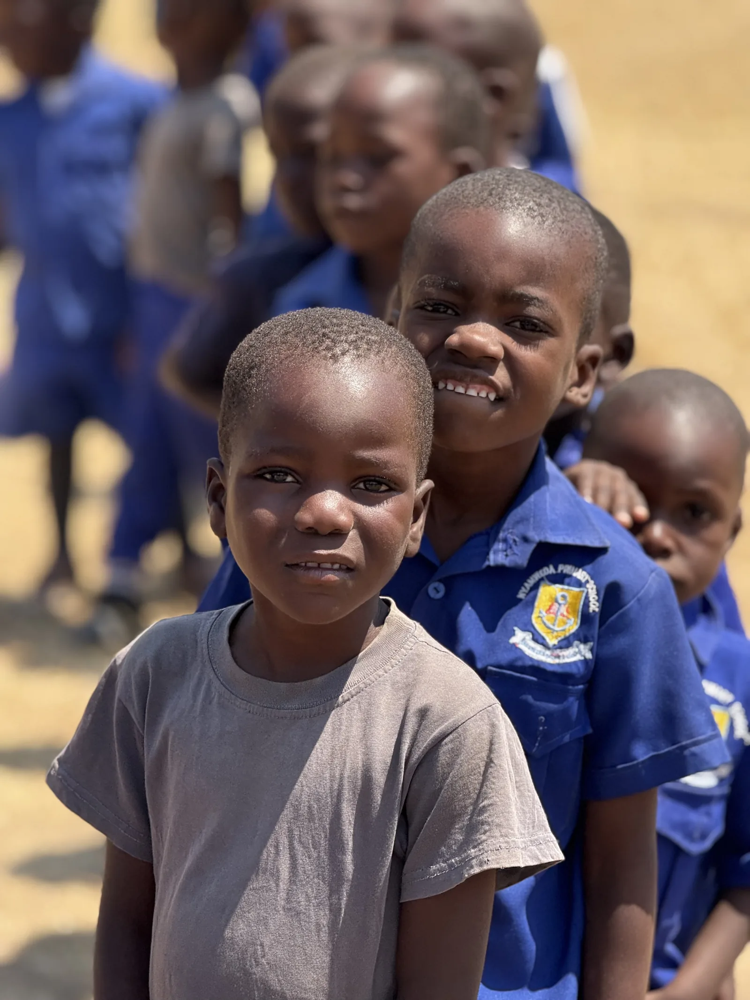
Über die Dominikanischen Schwestern wird Schulbildung für Kinder in einem sehr armen Viertel Harares unterstützt. Der Fokus liegt auf Kontinuität und Zugang.
Kinder mit Cerebral Palsy und anderen Einschränkungen erhalten Zugang zu Therapie, Betreuung und Familienunterstützung.
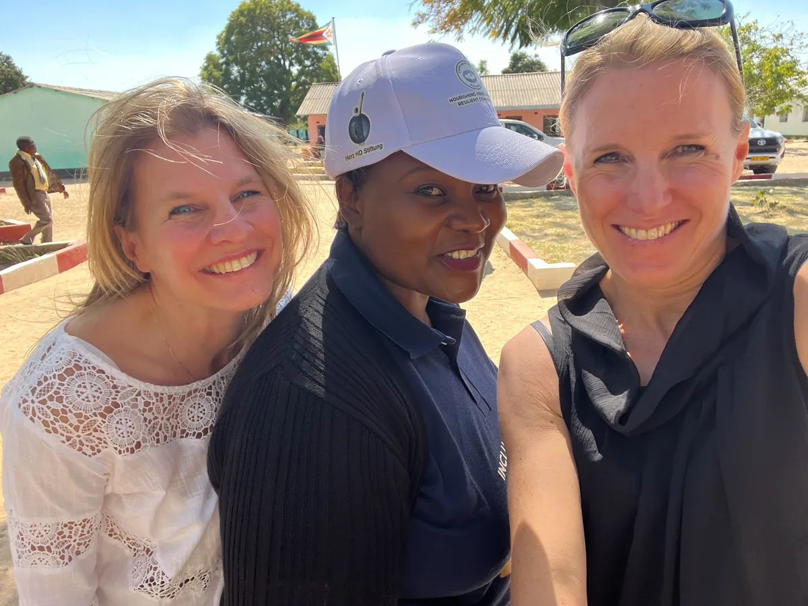
Digitale Gesundheitsakten und KI-gestützte Ansätze können medizinische Betreuung effizienter machen. Dieser Bereich sollte als Pilotphase klar gekennzeichnet bleiben.
Transparenz
Viele Organisationen helfen. Unser Fokus liegt auf direkter Wirkung, persönlicher Kontrolle und Partnerschaft auf Augenhöhe.
Reisen, Büro und Verwaltung werden privat getragen. Spenden gehen in die Projekte.
Projektbesuche sind Teil der Arbeit, nicht Imagepflege. So sehen wir Wirkung und Probleme selbst.
Die Lösungen kommen nicht einfach aus Deutschland. Sie werden mit Menschen vor Ort getragen.
Nächsten Schritt ermöglichen
Jede Spende hilft direkt: bei Schulspeisung, Wassertechnik, Therapie oder dem nächsten Schritt einer Schule in Richtung Eigenständigkeit.
Respekt zeigen
Eine spätere Sprachversion kann die Projektarbeit auch für Partner, Künstler und Unterstützer außerhalb Deutschlands zugänglich machen. House of Stone USA bleibt dabei klar separat von der Herz HD Stiftung Deutschland.